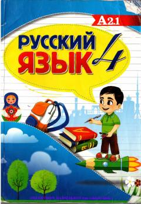

РЯ4-sinflar uchun rus tili fani bo'yicha o'quv darsligi.
Mazkur darslik o'zbek tilida va boshqa tillarda o'qitiladigan umumiy o'rta ta'lim maktablarining 4-sinf o'quvchilari uchun rus tilini chet tili sifatida o'rganishga mo'ljallangan. Kitobda nutqiy faoliyatning barcha turlari bo'yicha tizimli ishlar olib borilib, o'yin materiallari va audiomateriallar uchun QR-kodlar keltirilgan.